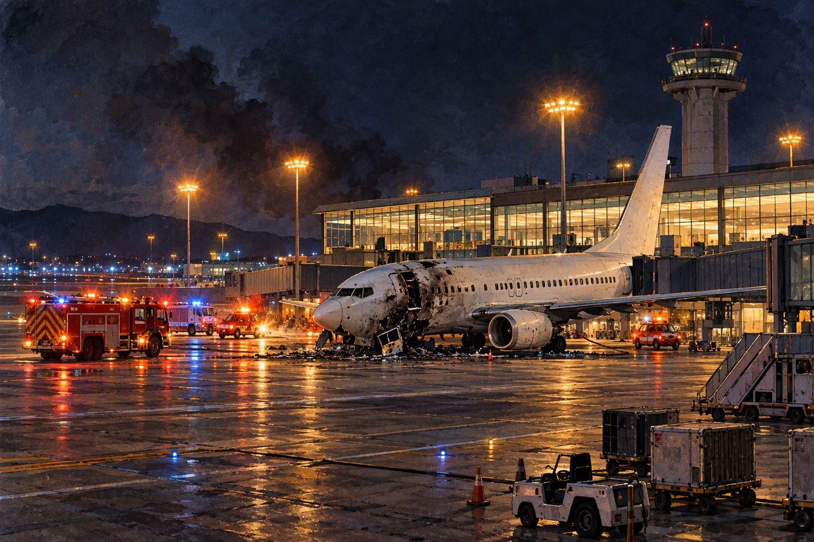
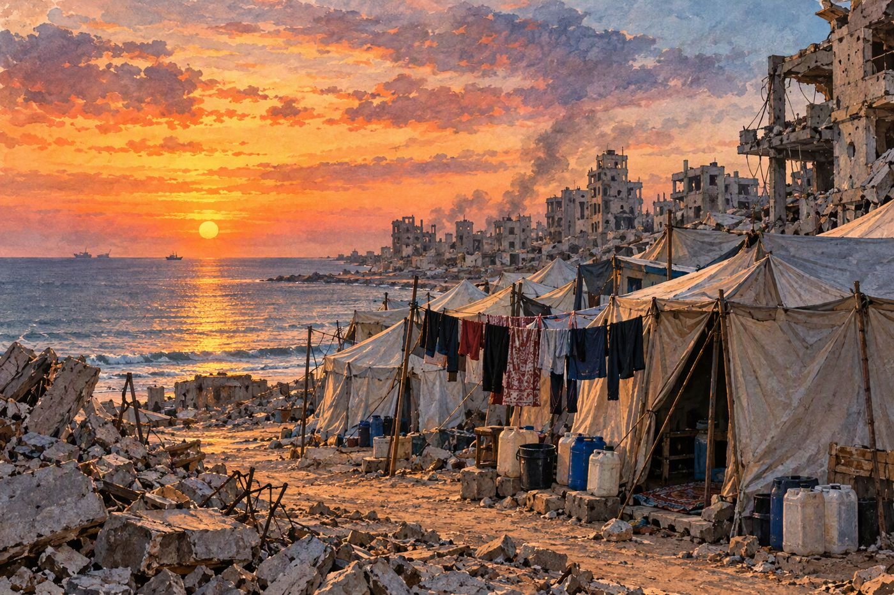
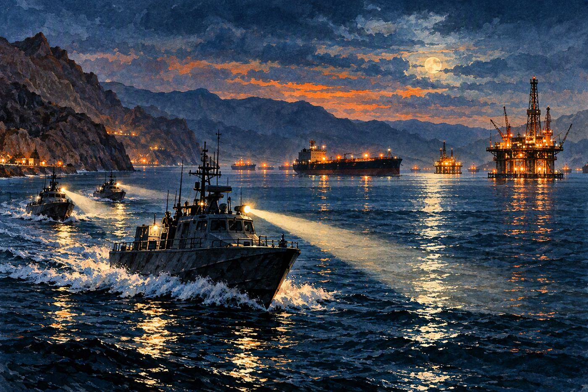

Una gasolinera en una carretera de noche. Ilustración: Geojournalnews.
EE. UU. vs. Irán
Trump promete no atacar Irán antes de las legislativas del 3 de noviembre y el petróleo cae
Asegura en Truth Social que mantiene «conversaciones productivas» con Teherán.
Washington · 1 min de lectura
El presidente Donald Trump escribió en su red Truth Social que Estados Unidos no atacará a Irán «en ningún momento» antes de las elecciones de medio mandato del 3 de noviembre, y aseguró que mantiene conversaciones productivas con la República Islámica, sin dar detalles. Describió además la situación de Irán como muy delicada en lo económico y lo militar, mientras sigue en pie el bloqueo estadounidense al petróleo iraní.

EE. UU. vs. Irán
Un misil hutí contra el aeropuerto de Riad mata a tres saudíes, entre ellos un piloto
Lufthansa suspende sus vuelos a la capital saudí hasta el 16 de octubre.
Nicaragua
La UE prorroga hasta octubre de 2027 las sanciones contra Rosario Murillo y la cúpula del régimen
Afectan a 21 personas y tres entidades: la Policía, el Consejo Supremo Electoral y Telcor.

Conflicto israelí
Un año de alto el fuego en Gaza: más de 1.470 muertos y el 65 % de la Franja aún ocupado
El sábado se cumple el primer aniversario de la tregua entre Israel y Hamás.
Los tres frentes, en una línea
EE. UU. vs. Irán
Trump descarta atacar antes del 3 de noviembre, pero la Guardia Revolucionaria extiende sus medidas a todo el Golfo y los hutíes golpean Riad.
Canal 10 pronosticó calor de hasta 36 °C en las zonas occidental y central, con posibles lluvias en el Caribe y el noroccidente.
Combustibles y servicios
El INE no había publicado el ajuste de precios de la semana al cierre de esta edición.
Habrá cortes de luz programados en zonas de Managua este fin de semana (Artículo 66). El crudo bajó hoy tras el anuncio de Trump sobre Irán.
Nota del editor
Hoy publicamos 10 ilustraciones propias y 30 infografías con el dato clave de cada noticia. Algunas notas de Nicaragua se basan solo en titulares de los medios que las publicaron, y así lo indicamos dentro de cada una.
La Redacción
Mercados
Cierre del jueves 8 de octubre · minigráfico: cierres del 7 y 8 de octubre
Dow Jones
51.231,64
+0,10 %
S&P 500
7.765,36
−0,47 %
Nasdaq
27.193,34
−1,25 %
IPC México
64.986,91
+0,52 %
WTI
91,49 $
+3,64 %
Oro
4.154 $
+0,32 %
Bono EE. UU. 10 años
5,231 %
−4,6 pb
Dólar/peso mexicano
18,01
−0,45 %
Datos del cierre de Nueva York (EFE, El CEO, Inversionistas.net). Los mercados siguen abiertos al publicar esta edición.
Cómo cerró el jueves
Sesión mixta: el Dow apenas subió y el Nasdaq cayó un 1,25 % por la venta de tecnológicas tras las dudas sobre los ingresos de OpenAI. El petróleo subió más de un 3 % por los ataques en Ormuz.
En México, la BMV ganó un 0,52 % gracias al tono más flexible de las minutas de Banxico.
Hoy, viernes 9
El crudo baja tras la promesa de Trump de no atacar Irán antes del 3 de noviembre.
Rebote de los índices: S&P +0,43 % a media sesión.
Michigan: expectativas de inflación a un año en 4,7 %.
Bono a 10 años cerca del 5,22 %.
Impacto en Nicaragua
Combustibles: la pausa anunciada por Trump alivia el riesgo de un nuevo salto del crudo.
Remesas: el Diálogo Interamericano prevé 6.772 millones de dólares este año.
La Guardia Revolucionaria ataca un gigantesco buque de gas licuado que usó la ruta sur de Ormuz
Estrecho de Ormuz · 1 min de lectura
La Fuerza Naval de la Guardia Revolucionaria iraní informó que el buque de gas licuado de petróleo NV Sunshine fue alcanzado cuando intentaba cruzar por lo que Teherán llama la «ruta ilegal» en el sur del estrecho, y que sufrió un extenso…

EE. UU. vs. Irán
Irán extiende a todo el golfo Pérsico sus medidas contra los barcos «no autorizados»
Golfo Pérsico · 1 min de lectura
La Guardia Revolucionaria anunció este viernes que ampliará «a la región entera» del golfo Pérsico sus medidas contra la navegación no autorizada, más allá del estrecho de Ormuz, según un comunicado recogido por la agencia semioficial…
EE. UU. vs. Irán
EE. UU. sanciona 22 buques de la «flota fantasma» que mueve petróleo iraní
Washington · 1 min de lectura
Washington anunció el jueves sanciones contra 22 buques, 27 empresas y seis personas vinculadas al comercio de petróleo y petroquímicos de Irán. El Tesoro designó 17 embarcaciones y el Departamento de Estado otras cinco, dentro de la…
EE. UU. vs. Irán
Irán se niega a frenar el enriquecimiento de uranio pese al diálogo con Washington
Teherán · 1 min de lectura
El director de la Organización de Energía Atómica iraní, Mohammad Eslami, defendió la continuidad del enriquecimiento y restó importancia a las advertencias de EE. UU. sobre posibles ataques a instalaciones nucleares. El canciller Abbas…
EE. UU. vs. Irán
Los hutíes dicen controlar el espacio aéreo saudí y que solo permitirán vuelos humanitarios a Riad
Saná · 1 min de lectura
El portavoz militar hutí, Yehya Sarea, afirmó en X que el grupo controla el espacio aéreo de Arabia Saudí y que solo permitirá vuelos humanitarios desde y hacia el aeropuerto de Riad que autorice su centro de coordinación en Saná, según El…
EE. UU. vs. Irán
Putin promete a Pezeshkian hacer «todo lo posible» para ayudar a resolver la guerra con EE. UU.
Avaza · Turkmenistán · 1 min de lectura
El presidente ruso, Vladímir Putin, se reunió con su homólogo iraní, Masud Pezeshkian, en la ciudad turcomana de Avaza, en una cita adelantada 24 horas por el encuentro de la Comunidad de Estados Independientes y la Cumbre Ecológica del…
Rusia vs. Ucrania
6 noticias
Rusia vs. Ucrania
Witkoff y Kushner reúnen en Miami a Ucrania y Europa para buscar un alto el fuego parcial
Miami · 1 min de lectura
Los enviados de Trump, Steve Witkoff y Jared Kushner, abrieron este viernes en Miami dos días de conversaciones con la delegación ucraniana —Kyrylo Budanov, Rustem Umerov, Serguí Kyslytsia y David Arajamia— y con asesores de seguridad de…
Rusia vs. Ucrania
Zelenski advierte de «daños considerables» en la red eléctrica antes del invierno
Kiev · 1 min de lectura
Los últimos bombardeos rusos causaron daños considerables en la red eléctrica y en las instalaciones de transporte de electricidad, y las reparaciones continúan día y noche, según Zelenski. En los últimos días se han impuesto cortes de…
Rusia vs. Ucrania
Ucrania deja parcialmente fuera de servicio un segundo centro de datos de Yandex
Kaluga · Rusia · 1 min de lectura
Drones ucranianos atacaron el viernes el centro de datos de Yandex en la región de Kaluga, al suroeste de Moscú, que quedó parcialmente fuera de servicio, según la propia empresa, conocida como el «Google ruso». El fabricante ucraniano…
Rusia vs. Ucrania
Rusia dice haber tomado Kiyanitsa, en Sumi; un ataque ucraniano mata a un matrimonio en Bélgorod
Sumi · Bélgorod · 1 min de lectura
El Ministerio de Defensa ruso anunció la toma de la localidad de Kiyanitsa, en la provincia norteña de Sumi, sin dar cifras de bajas. El dato no ha sido confirmado por Kiev.
Rusia vs. Ucrania
La ONU contabiliza 85 civiles muertos en Ucrania en cuatro días de ataques rusos
Ginebra · 1 min de lectura
Al menos 85 civiles murieron y 346 resultaron heridos en Ucrania desde el lunes, según Naciones Unidas. El alto comisionado para los Derechos Humanos, Volker Türk, se declaró horrorizado y calificó de reprochables los ataques que matan a…
Rusia vs. Ucrania
Zelenski rechaza que la diplomacia esté estancada, como afirmó Marco Rubio
Priluki · 1 min de lectura
En un encuentro con periodistas en Priluki, Zelenski negó que la guerra esté en un callejón sin salida diplomático, como había dicho el secretario de Estado Marco Rubio, y pidió a Washington más presión económica sobre Moscú y garantizar…
Conflicto israelí
3 noticias
Conflicto israelí
ONU Mujeres: unas 50.000 mujeres y niñas muertas o gravemente heridas en Gaza desde 2023
Gaza · 1 min de lectura
Más de 38.000 mujeres y niñas han muerto y 11.700 han resultado gravemente heridas en Gaza desde octubre de 2023, según ONU Mujeres, que estima que una de cada 21 ha muerto o vive con una discapacidad permanente. Durante el último año de…
Conflicto israelí
Muere un oficial israelí al volcar su vehículo en el sur del Líbano
Sur del Líbano · 1 min de lectura
El capitán Eliav Jaím Tsapalamus, de 21 años y natural de Haifa, murió y otros tres soldados resultaron heridos al volcar el todoterreno en el que viajaban en el sur del Líbano, informó el ministro de Defensa, Israel Katz.
Nicaragua
10 noticias
Nicaragua
La Prensa: el grupo ministerial de la OEA buscaría contactar a Managua después del 3 de noviembre
Washington · 1 min de lectura
En su editorial de hoy, La Prensa sostiene, citando a personas relacionadas con el tema, que el Grupo Ministerial creado por la OEA el 2 de octubre se integraría durante octubre, con EE. UU. como principal promotor, y que tras las…
Nicaragua
El Salvador desarticula una red que llevaba cocaína desde Nicaragua y Managua protesta
San Salvador · Managua · 1 min de lectura
La Fiscalía salvadoreña desarticuló una red que trasladaba cocaína desde Nicaragua hacia Guatemala y reportó 1.917 kilos de droga decomisados, según Artículo 66. 100% Noticias cifra los decomisos en 48,1 millones de dólares y describe una…
Nicaragua
EE. UU. reprueba a Nicaragua en trata de personas y alerta del reclutamiento de nicaragüenses para fábricas de drones en Rusia
Washington · 1 min de lectura
El informe anual de EE. UU. sobre trata de personas vuelve a reprobar al gobierno de Ortega y revela el reclutamiento de nicaragüenses para trabajar en fábricas de drones en Rusia, según 100% Noticias.
Nicaragua
La Fundación Heritage pide a Trump procesar a altos funcionarios del régimen de Ortega y Murillo
Washington · 1 min de lectura
El centro de pensamiento conservador Heritage Foundation pidió al presidente Trump procesar a altos funcionarios del régimen nicaragüense por apoyo al terrorismo, según 100% Noticias.
Nicaragua
Nicaragua recibirá 6.772 millones de dólares en remesas y será el país más dependiente de ellas en la región
Managua · 1 min de lectura
Según un estudio del Diálogo Interamericano citado por La Prensa, las remesas a Nicaragua crecerán este año por encima del promedio regional, pese a la política migratoria de EE. UU., y alcanzarán 6.772 millones de dólares.
Nicaragua
Tres jóvenes de Nicaragua, Francia y Suiza mueren arrastradas por un río en Chinandega
El Viejo · Chinandega · 1 min de lectura
Tres jóvenes de nacionalidad nicaragüense, francesa y suiza murieron cuando la corriente arrastró el vehículo en el que intentaban cruzar un río de madrugada en una zona rural de El Viejo, según 100% Noticias. Un ciudadano mexicano…
Nicaragua
El campesino José Danilo Jirón cumple 19 meses desaparecido bajo custodia del régimen
Nicaragua · 1 min de lectura
Artículo 66 recordó que el campesino José Danilo Jirón cumple 19 meses desaparecido bajo custodia de las autoridades.
Nicaragua
Un listado policial revela la persecución de Ortega y Murillo contra 33 indígenas mayangnas
Caribe Norte · 1 min de lectura
Artículo 66 publicó un listado policial que, según su investigación, muestra la persecución del régimen contra 33 indígenas mayangnas.
Nicaragua
Transnica retoma este sábado los viajes diarios entre Managua y San José
Managua · San José · 1 min de lectura
La empresa reanuda el 10 de octubre su servicio diario entre Nicaragua y Costa Rica, tras una interrupción vinculada a su permiso de operación, según 100% Noticias.
Política
5 noticias
Política
Datafolha: Flávio Bolsonaro 49 %, Lula 45 %, empate técnico para la segunda vuelta
Brasilia · 1 min de lectura
El senador Flávio Bolsonaro lidera con el 49 % de la intención de voto frente al 45 % de Lula da Silva en la primera encuesta de Datafolha para la segunda vuelta del 25 de octubre. Con un margen de error de dos puntos, la firma lo…
Política
La jurista sudafricana Navi Pillay, que dictaminó genocidio en Gaza, gana el Nobel de la Paz
Oslo · Núremberg · 1 min de lectura
El Comité Noruego del Nobel premió a Navanethem «Navi» Pillay, de 85 años, por sus esfuerzos para promover la paz y el derecho internacional. Pillay defendió a Nelson Mandela y a otros opositores del apartheid, fue jueza del Tribunal Penal…
Política
EE. UU. acusa a Maduro y a Cilia Flores de conspiración para cometer torturas
Nueva York · Caracas · 1 min de lectura
La justicia estadounidense acusó el jueves a Nicolás Maduro y a Cilia Flores de conspiración para cometer torturas contra opositores, militares y detenidos, entre ellos tres ciudadanos estadounidenses. Se suma a los cargos por narcotráfico…
Política
Delcy Rodríguez adelanta la Navidad en Venezuela al 1 de noviembre, como hacía Maduro
Caracas · 1 min de lectura
La presidenta encargada de Venezuela anunció en la 82.ª asamblea de Fedecámaras que la Navidad comenzará el 1 de noviembre, porque, dijo, activa la economía y la felicidad. Maduro decretó ese adelanto varias veces desde 2013, en momentos…
Política
López Aliaga mantiene menos de un punto de ventaja sobre Allison en Lima, pendiente del Jurado Electoral
Lima · 1 min de lectura
Con el 100 % de las actas procesadas, Renovación Popular, de Rafael López Aliaga, suma el 27,706 % de los votos en Lima Metropolitana, frente al 26,838 % de Avanza País, de Francis Allison, según la ONPE. Unas 1.900 actas observadas deben…
Economía
3 noticias
Economía
El Nasdaq cae un 1,25 % por las dudas sobre los ingresos de OpenAI
Nueva York · 1 min de lectura
Wall Street cerró mixto el jueves: el Dow Jones subió un 0,10 % hasta 51.231 puntos, el S&P 500 cayó un 0,47 % hasta 7.765 y el Nasdaq un 1,25 % hasta 27.193. Oracle bajó un 5,58 %, Intel un 5,34 %, Micron un 4,79 %, Broadcom un 4,35 % y…
Economía
Wall Street rebota el viernes, pero suben las expectativas de inflación en EE. UU.
Nueva York · 1 min de lectura
Los índices abrieron el viernes al alza, ayudados por la caída del petróleo tras la promesa de Trump de no atacar Irán antes de las legislativas. A media sesión el S&P 500 ganaba un 0,43 % y el Dow un 0,52 %, según Inversionistas.net.
Economía
La Bolsa Mexicana sube un 0,52 % impulsada por las minutas de Banxico
Ciudad de México · 1 min de lectura
El IPC de la Bolsa Mexicana cerró el jueves en 64.986,91 puntos, con un alza del 0,52 %. Coca-Cola FEMSA lideró las ganancias (+3,22 %) y Grupo Aeroportuario del Pacífico registró la mayor caída (−1,38 %).
Mundo y clima
1 noticias
Mundo y clima
México, entre dos huracanes: Isaías llega a categoría 3 y Simón se fortalece frente a Guerrero
Golfo de México · Pacífico · 1 min de lectura
El huracán Isaías alcanzó la categoría 3 en el golfo de México en su camino hacia EE. UU., según N+. Es el primer huracán de la temporada atlántica y empató el récord del primer huracán más tardío desde 1905.
Cultura
1 noticias
Cultura
Un nicaragüense que llegó a Roma a estudiar filosofía terminó cantando para el papa León XIV
Roma · 1 min de lectura
Carlos Cordonero llegó a Roma en 2023 con el plan de estudiar filosofía, pero hoy integra el coro de la Basílica de San Pedro y pudo cantar ante el papa León XIV, según Artículo 66.
Deportes Nicaragua
3 noticias
Deportes Nicaragua
Rivas y Granada juegan hoy el tercer partido de la final del Pomares, empatada 1-1
Rivas · 1 min de lectura
La serie final del Campeonato Germán Pomares sigue este viernes a las 5:00 p. m. en el estadio Yamil Ríos Ugarte de Rivas. Por el Frente Sur abrirá el zurdo Pedro Torres y por Granada, Kenny Cruz, número uno de la rotación de los…
Deportes Nicaragua
Román «Chocolatito» González sigue su recuperación para su pelea de despedida en 2027
Managua · 1 min de lectura
El excampeón mundial continúa su proceso de recuperación con la mira en un combate de despedida en 2027, según La Prensa.
Deportes Nicaragua
UNAN Managua rompe nueve años sin vencer al Real Estelí en la Liga Primera
Managua · 1 min de lectura
El conjunto capitalino se impuso 1-0 al Real Estelí, según Canal 10, y cortó una racha de nueve años sin ganarle al club norteño en la Liga Primera.
Si solo recuerdas tres cosas de hoy
Pausa con condiciones: Trump aparca los ataques a Irán hasta las legislativas, pero Ormuz, el Golfo y el mar Rojo siguen calientes.
Ucrania negocia sin Rusia: Washington busca en Miami un alto el fuego parcial sobre energía y el mar Negro antes de llevarlo a Moscú.
Más presión sobre Managua: la UE prorroga las sanciones un año y El Salvador señala una ruta de cocaína desde Nicaragua.
Fe de erratas: sin correcciones a la edición del 8 de octubre.
GEOJOURNALNEWS
EE. UU. vs. Irán
Trump promete no atacar Irán antes de las legislativas del 3 de noviembre y el petróleo cae
Asegura en Truth Social que mantiene «conversaciones productivas» con Teherán.
Washington · 1 min de lectura
Una gasolinera en una carretera de noche. Ilustración: Geojournalnews.
El presidente Donald Trump escribió en su red Truth Social que Estados Unidos no atacará a Irán «en ningún momento» antes de las elecciones de medio mandato del 3 de noviembre, y aseguró que mantiene conversaciones productivas con la República Islámica, sin dar detalles. Describió además la situación de Irán como muy delicada en lo económico y lo militar, mientras sigue en pie el bloqueo estadounidense al petróleo iraní.
El anuncio se produjo después de que The Atlantic informara que la Casa Blanca había pedido al Pentágono opciones para atacar objetivos iraníes antes de las legislativas, y de que The New York Times señalara la «ambivalencia» de Trump sobre esos planes. Las encuestas indican que el electorado está molesto por el precio de los combustibles y que el Partido Republicano podría perder el control del Congreso.
Tras sus palabras, el crudo retrocedió: el viernes el Brent cotizaba en 103,5 dólares por barril y el WTI en 90,3, según Primicias. Para importadores de combustible como Nicaragua, una tregua de facto hasta noviembre reduce el riesgo de un nuevo salto en los precios, aunque los ataques a buques en Ormuz continúan.
La Guardia Revolucionaria ataca un gigantesco buque de gas licuado que usó la ruta sur de Ormuz
Estrecho de Ormuz · 1 min de lectura
Buque de gas licuado en llamas cerca de la costa. Ilustración: Geojournalnews.
La Fuerza Naval de la Guardia Revolucionaria iraní informó que el buque de gas licuado de petróleo NV Sunshine fue alcanzado cuando intentaba cruzar por lo que Teherán llama la «ruta ilegal» en el sur del estrecho, y que sufrió un extenso incendio en la sala de máquinas y en el sistema de propulsión, según la cadena iraní HispanTV.
En el comunicado, la Guardia Revolucionaria responsabilizó al Ejército estadounidense de la tensión por incitar a las navieras a usar esa ruta, y advirtió que las acciones contra buques «infractores» ya no se limitarán a Ormuz. La versión procede de un medio estatal iraní y no ha sido confirmada de forma independiente.
Irán extiende a todo el golfo Pérsico sus medidas contra los barcos «no autorizados»
Golfo Pérsico · 1 min de lectura
Lanchas patrulleras con reflectores de noche en el Golfo. Ilustración: Geojournalnews.
La Guardia Revolucionaria anunció este viernes que ampliará «a la región entera» del golfo Pérsico sus medidas contra la navegación no autorizada, más allá del estrecho de Ormuz, según un comunicado recogido por la agencia semioficial Tasnim y citado por El Periódico. No precisó en qué consisten esas medidas.
En ocasiones anteriores, la propia Guardia Revolucionaria ha confirmado ataques contra cargueros que cruzaban el estrecho sin seguir las rutas fijadas por Teherán. El anuncio llega un día después de que el Comando Central de EE. UU. asegurara que Washington y sus socios controlan claramente el paso.
EE. UU. sanciona 22 buques de la «flota fantasma» que mueve petróleo iraní
Washington · 1 min de lectura
Un sello rojo sobre petroleros en un puerto. Ilustración: Geojournalnews.
Washington anunció el jueves sanciones contra 22 buques, 27 empresas y seis personas vinculadas al comercio de petróleo y petroquímicos de Irán. El Tesoro designó 17 embarcaciones y el Departamento de Estado otras cinco, dentro de la «Operation Economic Outcast» lanzada en agosto para reducir los ingresos de la Guardia Revolucionaria.
Entre los barcos citados figuran el Starway, con bandera de Panamá, al que se atribuye el transporte de más de tres millones de barriles de nafta iraní desde 2025, y el Bitu, también panameño. Las cifras corresponden a operaciones que EE. UU. atribuye a cada buque, no al total exportado por Irán.
Irán se niega a frenar el enriquecimiento de uranio pese al diálogo con Washington
Teherán · 1 min de lectura
Una central nuclear al atardecer. Ilustración: Geojournalnews.
El director de la Organización de Energía Atómica iraní, Mohammad Eslami, defendió la continuidad del enriquecimiento y restó importancia a las advertencias de EE. UU. sobre posibles ataques a instalaciones nucleares. El canciller Abbas Araqchi adelantó que Irán podría responder en los próximos días a la última propuesta estadounidense, que contempla reabrir Ormuz en siete días si se cumplen las condiciones iraníes.
Antes de los bombardeos de junio de 2025, el Organismo Internacional de Energía Atómica calculaba que Irán tenía 440,9 kilos de uranio enriquecido al 60 %. Desde entonces los inspectores no han podido volver a las instalaciones afectadas para verificar las existencias.
Un misil hutí contra el aeropuerto de Riad mata a tres saudíes, entre ellos un piloto
Lufthansa suspende sus vuelos a la capital saudí hasta el 16 de octubre.
Riad · 1 min de lectura
Aeropuerto de noche con vehículos de emergencia. Ilustración: Geojournalnews.
Tres ciudadanos saudíes murieron y varias personas de distintas nacionalidades resultaron heridas en dos ataques del jueves contra el Aeropuerto Internacional Rey Khalid de Riad, informó la Autoridad General de Aviación Civil. El primero alcanzó las instalaciones y el segundo un avión de Saudia que estaba en tierra y sin pasajeros. Entre los fallecidos está el capitán Hamoud Ali Alkalthami. Los hutíes de Yemen se atribuyeron el ataque con un misil balístico.
Es el segundo ataque mortal contra aeropuertos saudíes desde el miércoles. Cientos de vuelos fueron cancelados según FlightAware; Air India suspendió operaciones hasta el sábado, Lufthansa hasta el 16 de octubre y Pakistan International Airlines también canceló sus vuelos. La ofensiva coincide con la campaña de la coalición liderada por Arabia Saudí contra los hutíes cerca del estrecho de Bab el Mandeb.
Los hutíes dicen controlar el espacio aéreo saudí y que solo permitirán vuelos humanitarios a Riad
Saná · 1 min de lectura
Infografía: Geojournalnews, con datos de El Periódico.
El portavoz militar hutí, Yehya Sarea, afirmó en X que el grupo controla el espacio aéreo de Arabia Saudí y que solo permitirá vuelos humanitarios desde y hacia el aeropuerto de Riad que autorice su centro de coordinación en Saná, según El Periódico.
La declaración llega después de ataques con misiles y drones contra varios aeropuertos del reino que, en tres días, causaron seis muertos y llevaron a aerolíneas emiratíes a cancelar vuelos. Arabia Saudí no ha respondido públicamente a esa afirmación.
Putin promete a Pezeshkian hacer «todo lo posible» para ayudar a resolver la guerra con EE. UU.
Avaza · Turkmenistán · 1 min de lectura
Infografía: Geojournalnews, con datos de La Opinión de Murcia / Europa Press.
El presidente ruso, Vladímir Putin, se reunió con su homólogo iraní, Masud Pezeshkian, en la ciudad turcomana de Avaza, en una cita adelantada 24 horas por el encuentro de la Comunidad de Estados Independientes y la Cumbre Ecológica del Caspio.
Según La Opinión de Murcia, Putin afirmó que Irán no tiene culpa alguna en la guerra con Estados Unidos, que la posición de Rusia es «bien conocida» y que Moscú hará todo lo que esté a su alcance para resolver lo que describió como el problema más grave de la actualidad.
Witkoff y Kushner reúnen en Miami a Ucrania y Europa para buscar un alto el fuego parcial
La propuesta cubriría infraestructuras energéticas y el tráfico en el mar Negro; Rusia no participa.
Miami · 1 min de lectura
Infografía: Geojournalnews, con datos de Moncloa.com, France 24, Euronews.
Los enviados de Trump, Steve Witkoff y Jared Kushner, abrieron este viernes en Miami dos días de conversaciones con la delegación ucraniana —Kyrylo Budanov, Rustem Umerov, Serguí Kyslytsia y David Arajamia— y con asesores de seguridad de Francia, Alemania y Reino Unido, además de representantes de la OTAN y la UE. Rusia no participa en esta ronda.
Sobre la mesa hay garantías de seguridad para Kiev, un plan económico para la posguerra y un borrador de alto el fuego parcial que cubriría los ataques contra infraestructuras energéticas y el tráfico marítimo en el mar Negro. Según Moncloa.com, Washington insiste en que los ataques ucranianos a refinerías rusas encarecen el diésel en EE. UU., y los enviados planean viajar a Moscú a finales de mes.
Zelenski dijo que aún no puede decir qué es realista, para no dar a Rusia motivos para «hacer lo contrario». Su equipo regresará a Kiev el lunes para informarle.
Zelenski advierte de «daños considerables» en la red eléctrica antes del invierno
Kiev · 1 min de lectura
Infografía: Geojournalnews, con datos de AFP / Yahoo.
Los últimos bombardeos rusos causaron daños considerables en la red eléctrica y en las instalaciones de transporte de electricidad, y las reparaciones continúan día y noche, según Zelenski. En los últimos días se han impuesto cortes de emergencia en varias regiones, y Ucrania teme repetir el invierno pasado, cuando millones de hogares quedaron sin calefacción ni luz.
Zelenski acusó a la alcaldía de Kiev, dirigida por Vitali Klitschko, de retrasos en los planes para proteger infraestructuras esenciales. Klitschko dijo a la AFP que la capital instala calefacción de emergencia y reservas de combustible, alimentos y agua.
Ucrania deja parcialmente fuera de servicio un segundo centro de datos de Yandex
Kaluga · Rusia · 1 min de lectura
Sala de servidores con humo e incendio al fondo. Ilustración: Geojournalnews.
Drones ucranianos atacaron el viernes el centro de datos de Yandex en la región de Kaluga, al suroeste de Moscú, que quedó parcialmente fuera de servicio, según la propia empresa, conocida como el «Google ruso». El fabricante ucraniano Firepoint dijo que se usaron sus drones FP-1.
Un día antes, otro ataque dejó inoperativo el centro de Sasovo, donde Yandex tiene dos de sus tres supercomputadores de inteligencia artificial. Reuters lo describe como una ampliación de los objetivos de Kiev después de que Moscú atacara centros de datos en Ucrania. Yandex pactó con otros proveedores para trasladar los datos de sus clientes.
Rusia dice haber tomado Kiyanitsa, en Sumi; un ataque ucraniano mata a un matrimonio en Bélgorod
Sumi · Bélgorod · 1 min de lectura
Infografía: Geojournalnews, con datos de MDZ / EFE, Información / El Periódico.
El Ministerio de Defensa ruso anunció la toma de la localidad de Kiyanitsa, en la provincia norteña de Sumi, sin dar cifras de bajas. El dato no ha sido confirmado por Kiev.
En territorio ruso, un proyectil ucraniano mató a un matrimonio en su vivienda de Razumnoye, en Bélgorod, y dejó cuatro heridos, entre ellos un niño. El Estado Mayor ucraniano informó de ataques contra tres objetivos de la industria militar en Nizhni Nóvgorod y Tver.
La ONU contabiliza 85 civiles muertos en Ucrania en cuatro días de ataques rusos
Ginebra · 1 min de lectura
Infografía: Geojournalnews, con datos de Noticias ONU.
Al menos 85 civiles murieron y 346 resultaron heridos en Ucrania desde el lunes, según Naciones Unidas. El alto comisionado para los Derechos Humanos, Volker Türk, se declaró horrorizado y calificó de reprochables los ataques que matan a personas en autobuses, en sus casas y en sus lugares de trabajo.
El balance incluye el ataque de Priluki, donde un edificio residencial de cinco plantas se derrumbó, y el bombardeo del jueves contra dos autobuses en Kramatorsk. El coordinador humanitario Matthias Schmale advirtió que las cifras podrían aumentar.
Zelenski rechaza que la diplomacia esté estancada, como afirmó Marco Rubio
Priluki · 1 min de lectura
Infografía: Geojournalnews, con datos de Información / El Periódico, France 24.
En un encuentro con periodistas en Priluki, Zelenski negó que la guerra esté en un callejón sin salida diplomático, como había dicho el secretario de Estado Marco Rubio, y pidió a Washington más presión económica sobre Moscú y garantizar la superioridad aérea ucraniana.
Rubio había advertido que la guerra se encuentra en un peligroso punto muerto. Trump dijo esta semana que prevé hablar pronto por teléfono con Putin.
Un año de alto el fuego en Gaza: más de 1.470 muertos y el 65 % de la Franja aún ocupado
El sábado se cumple el primer aniversario de la tregua entre Israel y Hamás.
Gaza · 1 min de lectura
Tiendas de campaña entre ruinas junto al mar. Ilustración: Geojournalnews.
Según EFE, desde que entró en vigor la tregua han muerto más de 1.470 gazatíes, entre ellos al menos 300 niños y 145 mujeres, según el Ministerio de Sanidad de Gaza: una media de cuatro muertos al día. Israel mantiene ocupado el 65 % de la Franja, mientras más de dos millones de personas se hacinan en unos 146 kilómetros cuadrados.
El acuerdo, aprobado el 10 de octubre de 2025, permitió liberar a los últimos 48 rehenes —20 de ellos vivos— a cambio de presos palestinos, y preveía una retirada parcial y la entrada diaria de 600 camiones de ayuda, condiciones que según EFE Israel ha incumplido. Netanyahu insiste en que las tropas no se replegarán hasta que Hamás se desarme por completo.
ONU Mujeres: unas 50.000 mujeres y niñas muertas o gravemente heridas en Gaza desde 2023
Gaza · 1 min de lectura
Infografía: Geojournalnews, con datos de Resumen Latinoamericano / La Jornada.
Más de 38.000 mujeres y niñas han muerto y 11.700 han resultado gravemente heridas en Gaza desde octubre de 2023, según ONU Mujeres, que estima que una de cada 21 ha muerto o vive con una discapacidad permanente. Durante el último año de tregua murieron 277.
La agencia señala que los abortos espontáneos llegaron a casi 4.000 en el primer semestre de 2026, el triple que en el semestre anterior, y que casi todas las mujeres y niñas de la Franja han sido desplazadas.
Muere un oficial israelí al volcar su vehículo en el sur del Líbano
Sur del Líbano · 1 min de lectura
Infografía: Geojournalnews, con datos de La Opinión de Murcia.
El capitán Eliav Jaím Tsapalamus, de 21 años y natural de Haifa, murió y otros tres soldados resultaron heridos al volcar el todoterreno en el que viajaban en el sur del Líbano, informó el ministro de Defensa, Israel Katz.
Según el Ejército israelí, el oficial pertenecía al Batallón 603 de la Séptima Brigada.
La UE prorroga hasta octubre de 2027 las sanciones contra Rosario Murillo y la cúpula del régimen
Afectan a 21 personas y tres entidades: la Policía, el Consejo Supremo Electoral y Telcor.
Bruselas · 1 min de lectura
Un candado con cadenas sobre una ciudad colonial con volcán. Ilustración: Geojournalnews.
El Consejo de la Unión Europea prorrogó este viernes, hasta el 15 de octubre de 2027, las medidas restrictivas contra 21 personas y tres entidades de Nicaragua. Incluyen congelación de activos, prohibición de ponerles fondos a disposición y veto de entrada o tránsito por territorio europeo. Según La Prensa y Despacho 505, entre los sancionados siguen Rosario Murillo y sus hijos Laureano, Juan Carlos y Camila Ortega Murillo; las entidades son la Policía Nacional, el Consejo Supremo Electoral y Telcor.
El Consejo condenó la «represión sistémica», pidió liberar a todos los presos políticos y abrir un diálogo con la oposición para pactar reformas electorales. El régimen de sanciones existe desde octubre de 2019 y se revisa cada año; esta prórroga no añade nombres.
La Prensa: el grupo ministerial de la OEA buscaría contactar a Managua después del 3 de noviembre
Washington · 1 min de lectura
Infografía: Geojournalnews, con datos de La Prensa (editorial).
En su editorial de hoy, La Prensa sostiene, citando a personas relacionadas con el tema, que el Grupo Ministerial creado por la OEA el 2 de octubre se integraría durante octubre, con EE. UU. como principal promotor, y que tras las elecciones estadounidenses del 3 de noviembre intentaría establecer comunicación con el régimen.
El diario da por descontado que Managua rechazará ese contacto y señala que, en ese caso, los cancilleres podrían ser convocados de nuevo, ya que la Reunión de Consulta sigue abierta. Es una valoración editorial, no un anuncio oficial de la OEA.
El Salvador desarticula una red que llevaba cocaína desde Nicaragua y Managua protesta
San Salvador · Managua · 1 min de lectura
Infografía: Geojournalnews, con datos de Artículo 66, 100% Noticias.
La Fiscalía salvadoreña desarticuló una red que trasladaba cocaína desde Nicaragua hacia Guatemala y reportó 1.917 kilos de droga decomisados, según Artículo 66. 100% Noticias cifra los decomisos en 48,1 millones de dólares y describe una investigación de más de dos años sobre una ruta marítima con apoyo logístico de pescadores.
El gobierno de Ortega y Murillo protestó ante El Salvador por la denuncia, según 100% Noticias y Centroamérica360. Artículo 66 sostiene que el régimen busca «escudarse» tras el operativo salvadoreño.
EE. UU. reprueba a Nicaragua en trata de personas y alerta del reclutamiento de nicaragüenses para fábricas de drones en Rusia
Washington · 1 min de lectura
Infografía: Geojournalnews, con datos de 100% Noticias.
El informe anual de EE. UU. sobre trata de personas vuelve a reprobar al gobierno de Ortega y revela el reclutamiento de nicaragüenses para trabajar en fábricas de drones en Rusia, según 100% Noticias.
La noticia se basa en el resumen publicado por 100% Noticias; no hemos podido consultar el informe completo del Departamento de Estado.
La Fundación Heritage pide a Trump procesar a altos funcionarios del régimen de Ortega y Murillo
Washington · 1 min de lectura
Infografía: Geojournalnews, con datos de 100% Noticias.
El centro de pensamiento conservador Heritage Foundation pidió al presidente Trump procesar a altos funcionarios del régimen nicaragüense por apoyo al terrorismo, según 100% Noticias.
La petición se suma a la presión de Washington tras la resolución de la OEA; la Casa Blanca no ha respondido públicamente. Solo disponemos del titular y el resumen de 100% Noticias.
Nicaragua recibirá 6.772 millones de dólares en remesas y será el país más dependiente de ellas en la región
Managua · 1 min de lectura
Infografía: Geojournalnews, con datos de La Prensa.
Según un estudio del Diálogo Interamericano citado por La Prensa, las remesas a Nicaragua crecerán este año por encima del promedio regional, pese a la política migratoria de EE. UU., y alcanzarán 6.772 millones de dólares.
Con esa cifra, Nicaragua se consolidaría como la economía más dependiente de las remesas en la región. El detalle completo del estudio está reservado a suscriptores de La Prensa.
Tres jóvenes de Nicaragua, Francia y Suiza mueren arrastradas por un río en Chinandega
El Viejo · Chinandega · 1 min de lectura
Infografía: Geojournalnews, con datos de 100% Noticias.
Tres jóvenes de nacionalidad nicaragüense, francesa y suiza murieron cuando la corriente arrastró el vehículo en el que intentaban cruzar un río de madrugada en una zona rural de El Viejo, según 100% Noticias. Un ciudadano mexicano sobrevivió.
Las circunstancias exactas del accidente aún no se han esclarecido.
El campesino José Danilo Jirón cumple 19 meses desaparecido bajo custodia del régimen
Nicaragua · 1 min de lectura
Infografía: Geojournalnews, con datos de Artículo 66.
Artículo 66 recordó que el campesino José Danilo Jirón cumple 19 meses desaparecido bajo custodia de las autoridades.
Su caso forma parte de las desapariciones forzadas que la CIDH y los expertos de la ONU pidieron a la OEA poner en el centro de sus deliberaciones sobre Nicaragua.
Transnica retoma este sábado los viajes diarios entre Managua y San José
Managua · San José · 1 min de lectura
Infografía: Geojournalnews, con datos de 100% Noticias, Artículo 66.
La empresa reanuda el 10 de octubre su servicio diario entre Nicaragua y Costa Rica, tras una interrupción vinculada a su permiso de operación, según 100% Noticias.
En otras noticias locales, Artículo 66 informó de cortes de luz programados en varias zonas de Managua durante este fin de semana.
Datafolha: Flávio Bolsonaro 49 %, Lula 45 %, empate técnico para la segunda vuelta
Brasilia · 1 min de lectura
Infografía: Geojournalnews, con datos de EFE, Diario El Mundo, EFE / Yahoo, Proceso.
El senador Flávio Bolsonaro lidera con el 49 % de la intención de voto frente al 45 % de Lula da Silva en la primera encuesta de Datafolha para la segunda vuelta del 25 de octubre. Con un margen de error de dos puntos, la firma lo considera un empate técnico. El 94 % de quienes ya eligieron dice estar totalmente decidido.
Un sondeo previo de PoderData daba a Bolsonaro 53 % frente a 47 %. Este viernes comienza la propaganda electoral en televisión, con cinco minutos diarios para cada candidato, y el 11 de octubre podría celebrarse el primer debate cara a cara.
La jurista sudafricana Navi Pillay, que dictaminó genocidio en Gaza, gana el Nobel de la Paz
Oslo · Núremberg · 1 min de lectura
Infografía: Geojournalnews, con datos de El Heraldo de México, Clarín, La Jornada / AFP, Telemundo / AP.
El Comité Noruego del Nobel premió a Navanethem «Navi» Pillay, de 85 años, por sus esfuerzos para promover la paz y el derecho internacional. Pillay defendió a Nelson Mandela y a otros opositores del apartheid, fue jueza del Tribunal Penal Internacional para Ruanda y de la Corte Penal Internacional, alta comisionada de la ONU para los Derechos Humanos y presidió la comisión de la ONU que concluyó que Israel cometió genocidio en Gaza, algo que Israel rechaza.
Pillay recibió la noticia en la sala de los juicios de Núremberg y dedicó el premio a los supervivientes de crímenes internacionales. Advirtió de los ataques políticos contra la Corte Penal Internacional y bromeó con que, si la aplaudían más, quizá compartiría el premio con Trump, que lo había reclamado. El galardón está dotado con 12 millones de coronas suecas.
EE. UU. acusa a Maduro y a Cilia Flores de conspiración para cometer torturas
Nueva York · Caracas · 1 min de lectura
Infografía: Geojournalnews, con datos de Emol / EFE, Artículo 66.
La justicia estadounidense acusó el jueves a Nicolás Maduro y a Cilia Flores de conspiración para cometer torturas contra opositores, militares y detenidos, entre ellos tres ciudadanos estadounidenses. Se suma a los cargos por narcotráfico y armas en el tribunal del Distrito Sur de Nueva York. Según Artículo 66, un juez negó a Flores el arresto domiciliario.
La nueva imputación describe, según la Fiscalía, una estrategia de represión y torturas para mantenerse en el poder. Maduro y Flores están detenidos en Nueva York desde su captura por fuerzas estadounidenses el 3 de enero.
Delcy Rodríguez adelanta la Navidad en Venezuela al 1 de noviembre, como hacía Maduro
Caracas · 1 min de lectura
Infografía: Geojournalnews, con datos de Emol / EFE, NTN24.
La presidenta encargada de Venezuela anunció en la 82.ª asamblea de Fedecámaras que la Navidad comenzará el 1 de noviembre, porque, dijo, activa la economía y la felicidad. Maduro decretó ese adelanto varias veces desde 2013, en momentos de crisis.
NTN24 informa que Rodríguez viajará a Roma para el Foro Mundial de la Alimentación de la FAO, que se inaugura el 12 de octubre, pese a estar sancionada por la Unión Europea.
López Aliaga mantiene menos de un punto de ventaja sobre Allison en Lima, pendiente del Jurado Electoral
Lima · 1 min de lectura
Infografía: Geojournalnews, con datos de Infobae, Líbero.
Con el 100 % de las actas procesadas, Renovación Popular, de Rafael López Aliaga, suma el 27,706 % de los votos en Lima Metropolitana, frente al 26,838 % de Avanza País, de Francis Allison, según la ONPE. Unas 1.900 actas observadas deben ser revisadas por el Jurado Electoral Especial antes de proclamar al ganador.
La ley no prevé segunda vuelta para alcaldías, por lo que ganará quien obtenga más votos válidos. Sí habrá segunda vuelta regional el 29 de noviembre donde ninguna fórmula supere el 30 %.
El Nasdaq cae un 1,25 % por las dudas sobre los ingresos de OpenAI
Nueva York · 1 min de lectura
Infografía: Geojournalnews, con datos de EFE, El CEO, Inversionistas.net.
Wall Street cerró mixto el jueves: el Dow Jones subió un 0,10 % hasta 51.231 puntos, el S&P 500 cayó un 0,47 % hasta 7.765 y el Nasdaq un 1,25 % hasta 27.193. Oracle bajó un 5,58 %, Intel un 5,34 %, Micron un 4,79 %, Broadcom un 4,35 % y Nvidia un 2,94 %.
Las ventas siguieron a informaciones según las cuales OpenAI comunicó a sus inversores ingresos anualizados de unos 50.000 millones de dólares a finales de septiembre, frente a cerca de 70.000 millones difundidos el mes pasado; CNBC atribuye la diferencia a la metodología. El WTI subió un 3,64 % hasta 91,49 dólares y el bono a 10 años bajó al 5,231 %.
Wall Street rebota el viernes, pero suben las expectativas de inflación en EE. UU.
Nueva York · 1 min de lectura
Infografía: Geojournalnews, con datos de Bolsamanía, Inversionistas.net, El CEO.
Los índices abrieron el viernes al alza, ayudados por la caída del petróleo tras la promesa de Trump de no atacar Irán antes de las legislativas. A media sesión el S&P 500 ganaba un 0,43 % y el Dow un 0,52 %, según Inversionistas.net.
La Universidad de Michigan informó que las expectativas de inflación a 12 meses subieron al 4,7 %, su nivel más alto desde mayo, y las de largo plazo al 3,5 %. El bono a 10 años se mantenía en torno al 5,22 % y el peso mexicano se debilitaba hacia 18,20 por dólar.
La Bolsa Mexicana sube un 0,52 % impulsada por las minutas de Banxico
Ciudad de México · 1 min de lectura
Infografía: Geojournalnews, con datos de El CEO, El CEO.
El IPC de la Bolsa Mexicana cerró el jueves en 64.986,91 puntos, con un alza del 0,52 %. Coca-Cola FEMSA lideró las ganancias (+3,22 %) y Grupo Aeroportuario del Pacífico registró la mayor caída (−1,38 %).
Según Laura Torres, de IMB Quants, el catalizador fueron las minutas de Banxico, que sugieren flexibilidad para volver a bajar la tasa de referencia independientemente de la Fed. El viernes el índice abrió por encima de 65.000 puntos.
México, entre dos huracanes: Isaías llega a categoría 3 y Simón se fortalece frente a Guerrero
Golfo de México · Pacífico · 1 min de lectura
Infografía: Geojournalnews, con datos de Milenio, N+, Wikipedia.
El huracán Isaías alcanzó la categoría 3 en el golfo de México en su camino hacia EE. UU., según N+. Es el primer huracán de la temporada atlántica y empató el récord del primer huracán más tardío desde 1905.
En el Pacífico, Simón subió a categoría 2 con vientos de 155 km/h y podría seguir intensificándose. La Marina activó su plan de auxilio en Guerrero, donde la gobernadora reportó inundaciones y deslaves pero ningún fallecido. La tormenta Rachel se aleja de Baja California Sur.
Un nicaragüense que llegó a Roma a estudiar filosofía terminó cantando para el papa León XIV
Roma · 1 min de lectura
Infografía: Geojournalnews, con datos de Artículo 66.
Carlos Cordonero llegó a Roma en 2023 con el plan de estudiar filosofía, pero hoy integra el coro de la Basílica de San Pedro y pudo cantar ante el papa León XIV, según Artículo 66.
El medio recoge su historia como la de uno de los nicaragüenses que han encontrado un espacio en el exterior.
Rivas y Granada juegan hoy el tercer partido de la final del Pomares, empatada 1-1
Rivas · 1 min de lectura
Estadio de béisbol al atardecer con un volcán al fondo. Ilustración: Geojournalnews.
La serie final del Campeonato Germán Pomares sigue este viernes a las 5:00 p. m. en el estadio Yamil Ríos Ugarte de Rivas. Por el Frente Sur abrirá el zurdo Pedro Torres y por Granada, Kenny Cruz, número uno de la rotación de los Tiburones, según Nueva Radio Ya.
Granada ganó el primer juego 2-0 y Rivas el segundo 3-1. El cuarto será el sábado a las 2:00 p. m. en Granada y el quinto el domingo en Rivas; de ser necesario, el séptimo se jugará el 14 de octubre en el Estadio Nacional Soberanía. El resultado de hoy no está incluido en esta edición.